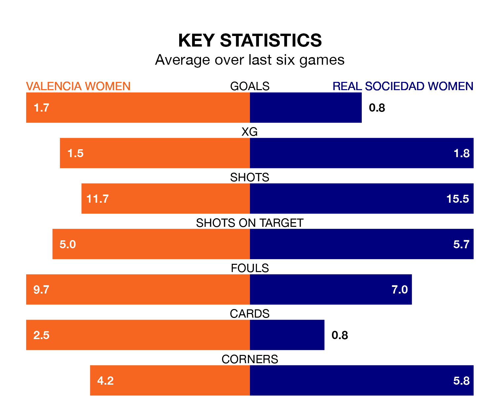

Real Sociedad Women travel to the Estadio Antonio Puchades looking to secure a first win in eight Liga F games against Valencia Women on Sunday.
Sociedad Women have lost three and drawn four matches since they last earned three points – against Eibar Women on February 4.
They face a Valencia side who have won two and drawn two over that time.
In the last 10 years, Valencia and Sociedad Women have played each other on 19 occasions. Valencia won eight of them, Sociedad Women nine, and they drew twice.
On average, Valencia scored 1.4 goals and Sociedad Women 1.9 in those matches.
Their last meeting was on November 25, when Sociedad Women won 2-0 at home.
With 28 goals in 23 games so far this season, Valencia are scoring at below the league average rate with 1.2 goals per game. And they are conceding more than average, letting in 48 goals at a rate of 2.1 per game.
Sociedad Women are also below average scorers, with 1.3 goals per game, compared to a league average of 1.6. They have conceded 1.7 goals per game.
In Synne Jensen, the visitors have one of the league's sharpest shooters so far this season. She has notched 11 goals in 21 appearances, to sit fifth in the scoring charts.
Her goal rate of one every 128 minutes is quicker than that of Ana Marcos Moral, the home side's top scorer with a goal every 148 minutes, and a total of nine goals in 23 games.
Valencia are 10th in the table after 23 games, of which they have won six and drawn five, earning 23 points.
Sociedad Women are two places ahead of Valencia in eighth, with seven wins and eight draws putting them on 29 points.
Valencia's last match was on Sunday, a 1-1 draw against Levante Women, with Marcos Moral getting the goal for Valencia.
Sociedad Women drew 1-1 with Sporting de Huelva last time out, on April 13, with Mirari Uria Gabilondo on the scoresheet.
Updated: 11:31 (UTC), 15/04/24